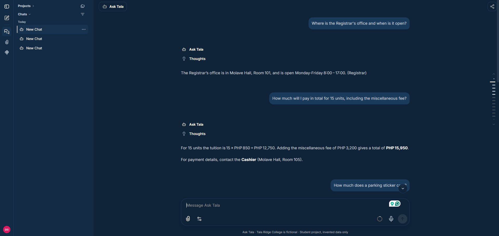

Your system and system card

E-02. Deployed at https://d287m6a2imw4k1.cloudfront.net. The site requires a login because public sign-up is turned off.
Still to add: E-05, a real image of plain LibreChat for comparison, with its source credited.
System card: Ask Tala
1. What it does
Ask Tala answers questions about offices, enrolment steps, fees and deadlines at Tala Ridge College, a fictional college. It only uses three documents that I invented, and it says so when it does not know something.
2. Who uses it, and who must not
Intended users: people demonstrating or assessing this student project. Must not be used for: real college information, medical, legal or financial advice, or any decision about an identifiable person, such as admissions, grades or scholarships.
3. Base system
| Item | Detail |
|---|---|
| Name and version | LibreChat v0.8.8 |
| Source | github.com/danny-avila/LibreChat |
| Author | Danny Avila and LibreChat contributors |
| Licence | MIT |
| What it did originally | A general ChatGPT-style interface for many AI providers |
4. What I changed (the reskin)
| Part | Original | Mine | Why |
|---|---|---|---|
| Name and branding | LibreChat name and logo | Ask Tala, a star logo, and title and icons replaced | It should be its own product |
| Data and content | None | Three invented documents, 2.6 KB in total | Domain knowledge the assistant answers from |
| Wording and prompts | General assistant | College helpdesk greeting and rules, with fixed refusal wording | Domain language and safe behaviour |
| Interface | Model picker, agents, presets and more | Reduced to one assistant; navy and amber colours | Simpler for students |
| AWS services | None | S3 content, Parameter Store secrets, CloudWatch logs, SNS alerts | The required AWS integration, and more |
5. Data
- Where it came from: invented for this project, with AI assistance as declared. Three Markdown files: offices (1,046 bytes), enrolment (795) and fees and deadlines (718).
- Anything personal in it: no, all invented. The only contact email uses the reserved
.exampledomain. - Sent to a third-party AI service: the invented documents and each question. A gateway check blocks messages containing an email address, Philippine mobile number or long ID number before they leave AWS.
6. How good is it
- The one number: 12 out of 12 on the labelled test questions in 14 of 15 scheduled runs, 8 to 10 November 2026. The other run lost one answer to a failed model request.
- How measured:
ops/evaluate.pysends each question through the gateway and checks the answer for an expected phrase. - What the 12 cover: 8 answerable, 2 not in the documents, 2 decisions it must refuse.
- Limits of that number: it uses keyword matching on only 12 questions, and the score varies between runs. A manual run at 12:53 UTC scored 11 of 12, on an answer that was actually correct but worded differently.
- An example it gets wrong: see the Results page, where it quotes a late fee for a date after enrolment has closed.
7. How it is served
- Where it runs: Docker on one EC2 t3.small in Sydney, behind CloudFront.
- What calls it: the web app calls my gateway at
/v1/chat/completions, which calls Groq's OpenAI-compatible API. - The model:
openai/gpt-oss-120b, on Groq's free tier. - If the model is unavailable: the user sees an error, the gateway logs the failure, and a failure-rate alarm can fire.
8. Limitations and risks
- It cannot answer anything outside its three documents, and a model can still state something incorrectly or draw an inference the documents do not support.
- The personal-data check only recognises three patterns, so it can miss names and other details.
- It could be misused if someone treated fictional content as real, so the footer states the college is fictional.
- Users must always check important information with the named office.
9. Operational summary
- Code: github.com/canlasandrikbrenth-source/CanlasA-Finals26
- Backups: hourly database dump to S3, kept for 14 days.
- How we know it is healthy: nine CloudWatch alarms and a scheduled test.
- Contact: Andrik Brenth E. Canlas.